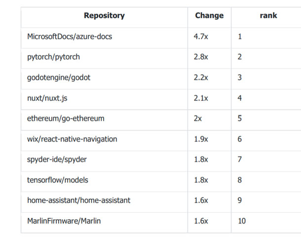

Les meilleurs projets open source 2018 : Vscode, React-natif, Tensorflow
Les principaux projets open source de Github pour 2018 incluent Tensorflow, l'outil d'automatisation de l'IT Ansible et Kubernetes. Les domaines en forte croissance sont l'apprentissage machine, l'impression 3D et l'analyse de données.
Les classements fait partie du rapport Octoverse de Github, qui a été lancé en même temps qu'une série de mises à jour de Github. Github, qui fait maintenant partie de Microsoft, a classé les meilleurs projets open source basés sur des contributeurs uniques entre le 1er octobre 2017 et le 30 septembre de cette année. Un classement basé sur 96 millions de projets logiciels dans le monde entier. Les meilleurs projets open source incluent :
- Microsoft/vscode
- facebook/react-native
- tensorflow/tensorflow
- angular/angular-cli
- MicrosoftDocs/azure-docs
- angular/angular
- ansible/ansible
- kubernetes/kubernetes
- npm/npm
- DefinitelyTyped/DefinitelyTyped
Et les projets open source dont la croissance est la plus rapide sont Microsoft Docs/azure-docs, pytorch/pytorch et godotengine/godot pour n'en citer que quelques-uns. Voici la répartition complète et l'évolution de la croissance par rapport à l'année précédente.

Les nouveaux projets tournent souvent autour d'algorithmes d'apprentissage machine. Le projet Dopamine de Google, un framework pour le prototypage d'algorithmes d'apprentissage de renforcement, et Detectron de Facebook Research, qui couvre les algorithmes de détection d'objets.
Github met également en évidence les langages dont la croissance est la plus rapide. Les thèmes communs sont là aussi l'apprentissage machine, l'interopérabilité et le DevOps. Voici un aperçu des langages les plus en vogue en ce moment.
- Vue
- Kotlin
- HCL
- TypeScript
- PowerShell
- Rust
- CMake
- Go
- Python
- Groovy
D'autres détails sur Github en chiffres :
- La plate-forme a connu une croissance de 30 % de l'écosystème au cours des 12 derniers mois ; Par catégorie, l'intégration continue et la sécurité, la qualité du code et la gestion de projet sont les domaines les plus populaires.
- Hong Kong, suivie de Singapour et de l'Égypte, a connu la croissance la plus rapide de contributeurs.
- C'est aux États-Unis et en Chine, suivis de l'Inde, du Royaume-Uni et du Brésil, que la croissance des nouvelles inscriptions a été la plus rapide.
- Les pays ayant le plus contribué sont les États-Unis, suivis de la Chine, de l'Inde, du Royaume-Uni, de l'Allemagne, du Canada et du Brésil. Le Brésil est passé de la 10e à la 7e place en un an.
- Il y a 31 millions de développeurs sur GitHub et 2,1 millions d'organisations.
Le rapport Octoverse est rendu public alors que Github annonce une série d'outils de développement. Ces outils comprennent Github Actions, une zone où le code peut être construit, partagé et exécuté à l'intérieur de conteneurs ; une API Security Advisor pour automatiser l'analyse de sécurité ; des alertes de vulnérabilité pour les projets Java et.net ; et Github Connect, qui permet aux entreprises de mieux se connecter avec la communauté open source.